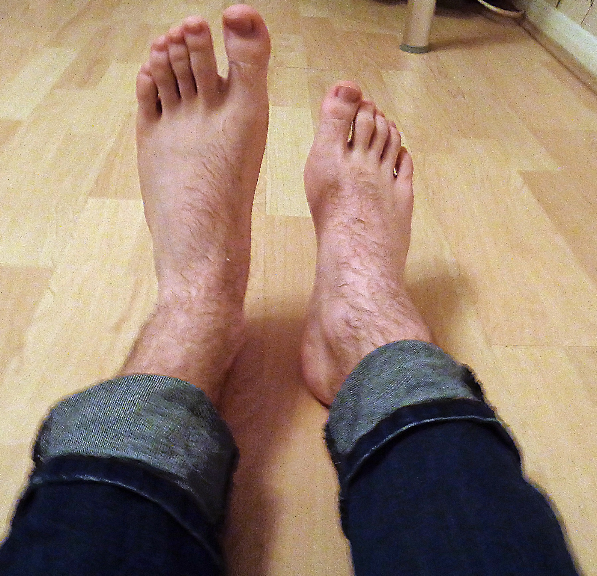

Homem de 58 anos, cãibras na perna direita atribuídas a “estresse emocional” — e, meses depois, um pé que não levanta mais. Antes de nomear a doença, convém topografar.
1º NMS2º NMSestresse = isca
Timeline: do “estresse” à fraqueza
Jairo, 58 anos. Há seis meses iniciou cãibras e tremores musculares na perna direita. Na época, o quadro foi atribuído a estresse emocional — isca de porta, não a causa.
Alguns meses depois, ainda sem melhora. Percebeu que está arrastando o pé direito ao caminhar. A perna esquerda também passou a ter cãibras e tremores musculares.
Exame: 1º e 2º no mesmo corpo
Miofasciculações nos quatro membros.
Hiperreflexia generalizada.
Sinal de Babinski bilateral.
Espasticidade muscular.
Nítida atrofia muscular, especialmente no membro inferior direito.
Chip mental: de um lado, fasciculação e atrofia (2º); do outro, hiperreflexia, Babinski e espasticidade (1º). No mesmo paciente.
Negativos e exames que fecham a porta
Sem distúrbios de sensibilidade.
Sem alterações oculares.
Sem incontinência urinária.
LCR normal.
TC e ressonância de crânio e de coluna cervicalnormais.
Ou seja: o que sobra é motor — e a imagem estrutural óbvia (crânio/coluna) e o liquor não explicam o quadro.
Método
Ir devagar, marcando os pontos passo a passo, antes de nomear a doença. A pergunta de porta permanece aberta: qual a hipótese diagnóstica mais provável?

Pé caído (drop-foot) — pé direito falha a dorsiflexão; o esquerdo eleva. A mesma moldura ensina o achado e o lado são.
By Pagemaker787, via Wikimedia Commons · CC BY-SA 4.0 · fonte
Porta do caso
O pé que arrasta não é “cansaço vago”: é fraqueza do tibial anterior. A foto mostra o lado doente parado enquanto o são se levanta — o achado que abre Jairo e que, lido como déficit de força, ancora o eixo motor antes de qualquer nome de doença.
Progressão clínica — Jairo
Timeline do membro inferior: cãibra à direita → arraste do pé → bilateralização, com chips laterais de 1º e 2º no mesmo corpo.
Quiz — fixação
Jairo, 58 a, 6 meses de cãibras no MID atribuídas a “estresse”, agora arrasta o pé, fasciculações nos 4M, hiperreflexia, Babinski bilateral, espasticidade e atrofia no MID. Sensibilidade, olhos e esfíncteres normais; LCR e RM crânio/coluna normais. O achado que mais empurra para topografia mista 1º+2º (e não só 2º) é:
Gabarito C. Fasciculação e atrofia falam 2º; Babinski (com hiperreflexia/espasticidade) grita 1º. A mistura no mesmo corpo é o discriminador.
(A) e (B) são 2º — necessários, mas sozinhos não “pegam” o 1º. (D) bilateraliza o 2º, não instala piramidal. Cai em A/B porque a banca ama fasciculação/atrofia e o olho gruda no 2º — esquece que o 1º também está gritando.
No caso, a melhor leitura dos negativos (sensibilidade, olhos, esfíncteres normais + LCR/imagem normais) é:
Gabarito B. O que não está alterado fecha o recorte “só motor” e tira o peso de lesão estrutural óbvia — sem absolver o “estresse”.
(A) absurdidade — o exame motor está devastado. (C) a isca não vira etiologia. (D) sensitivo preservado corta neuropatia sensitivo-motora clássica. Cai em D porque “fraqueza + perna” puxa reflexo de neuropatia; a sensibilidade normal é o freio.